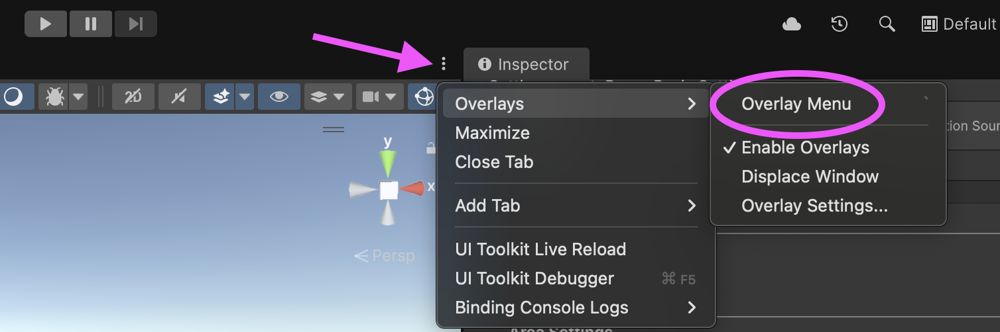
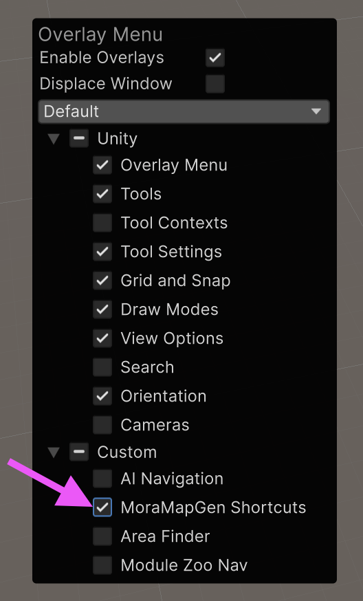
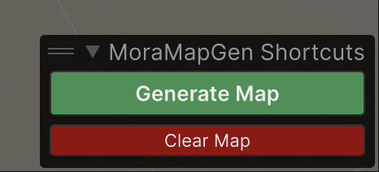

MoraMapGen Shortcuts
The MoraMapGen Shortcuts overlay gives you quick access to the Generate Map and Clear Map buttons, so you can do so without having to get back to the MoraMapGen inspector.
Accessing the Overlay
To add the Area Finder overlay, click the 3-dots button in the top right corner of the Scene View, then select Overlays/Overlay Menu.

The in the Overlay Menu click the checkbox to enable MoraMapGen Shortcuts.

Using the Overlay

- Generate Map Generates a map using your current settings in your MoraMapGen component in your scene.
- Clear Map Clears any existing map.
- Refresh only shows if the overlay doesn't have access to the MoraMapGen component. Click it to force it to find it.